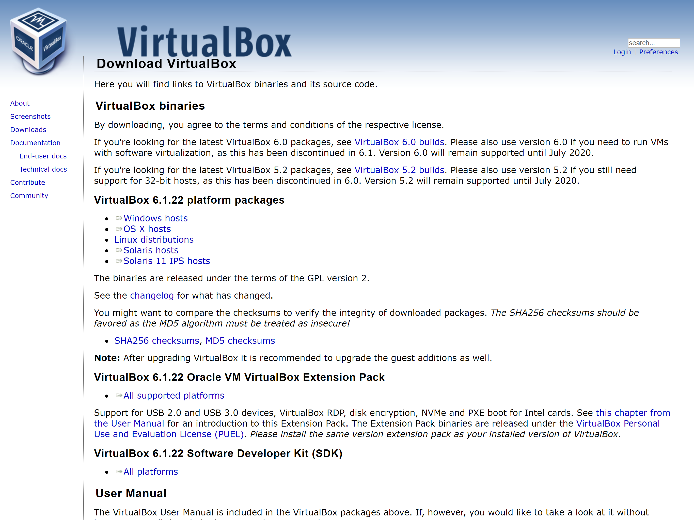
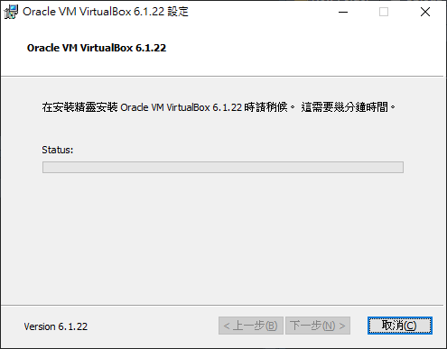
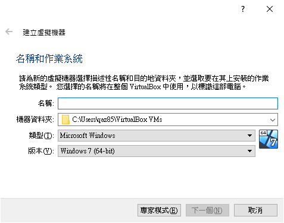
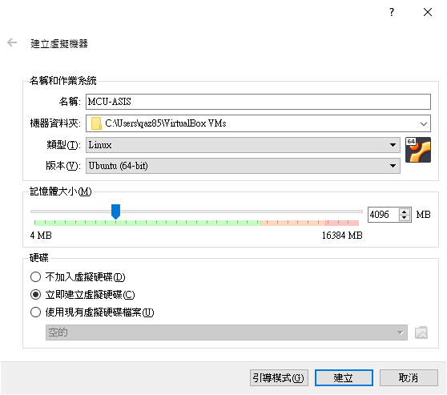
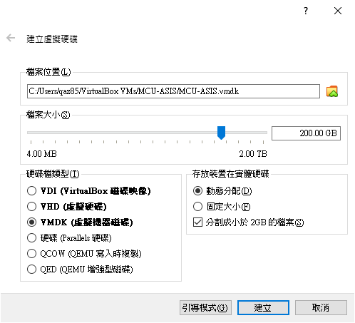
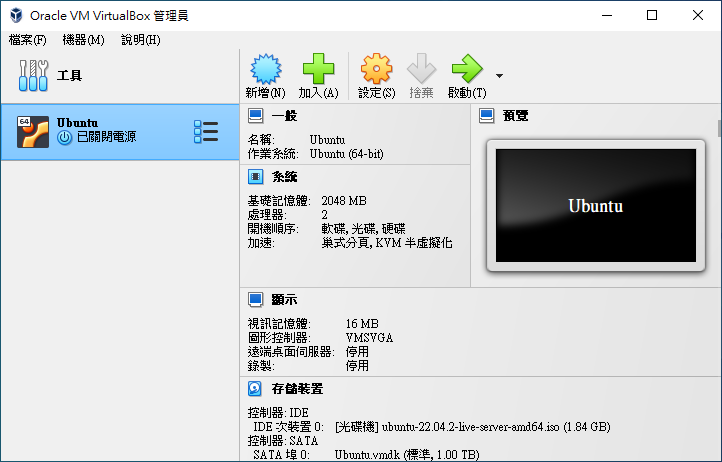

Chapter 1 事前準備
1.1 引言
應用於實體電腦之前，我們會在虛擬機器內先執行過一遍，確認操作沒問題後，才會在實體點腦上操作。這裡我選用 VirtualBox 作為示範。
1.2 安裝 VirtualBox
先到 VirtualBox 官方網站的下載頁面，下載適合你電腦系統的安裝執行檔，假如是 Windows 系統就點擊 「Windows hosts」的下載連結，如果是其他作業系統就根據你的作業系統下載對應的檔案。

安裝的過程中只需使用預設的設定即可，預設設定做了安裝虛擬機器的驅動程式、關聯檔案…等等，正常安裝不需要變更它。

1.3 於虛擬機器安裝作業系統
再安裝完 VirtualBox 後，打開並不會有預先安裝好的作業系統，需要在 VirtualBox 內自行安裝作業系統。首先介紹 VirtualBox 的使用者介面:
Figure 1.1: VirtualBox 的操作介面
如 1.1 所示，右邊主要功能圖示由左而右的功能分別是:
喜好設定: 設定 VirtualBox 的整體設定，像是軟體語言、虛擬機器預設存放位置…等等匯入: 匯入虛擬機器檔案 (.ovf)匯出: 匯出虛擬機器檔案新增: 新增新的虛擬主機加入: 加入已經存在的虛擬主機
1.3.1 新增 Ubuntu 作業系統設定
所以要新增新的虛擬機器是按「新增」。

這裡先點選「專家模式」，專家模式可以一併設定虛擬機器的所有設定。

記憶體大小根據每個人電腦的性能做調整，虛擬主機沒用來做什麼事最多4Gb (4 * 1024Mb) 就很夠用了。這裡要注意的一點是，虛擬機器的存放位置，當你要轉移虛擬機器時才不會找不到。
預設的虛擬機器存放位置位於使用者資料夾中的Virtual VMs資料夾，像我的使用者是qaz85，那虛擬機器就位於:
C:\Users\qaz85\VirtualBox VMs類型與版本記得設定為 Linux 與 Ubuntu 64位元 版本。完成之後點擊「建立」。

這裡我會選 VMDK 格式的原因是因為，如果要轉移虛擬主機檔案時，單一個檔案會輕易地超過 4Gb，而超過此上限得檔案在複製時，如果目的地的裝置格式不是 ntfs 的話，會沒有辦法複製。為了預防這個問題，我在這邊先選擇 VMDK 作為我虛擬主機的檔案格式。
這裡如果選擇「固定大小」會新增一個跟你設定的檔案大小一樣大的虛擬機器檔案，除非你的硬碟很大，否則不建議這麼做。

完成後，會在 Virtual Machine 的選單左邊看見剛剛新建的虛擬機器，不過此時的虛擬機器內還沒有作業系統。